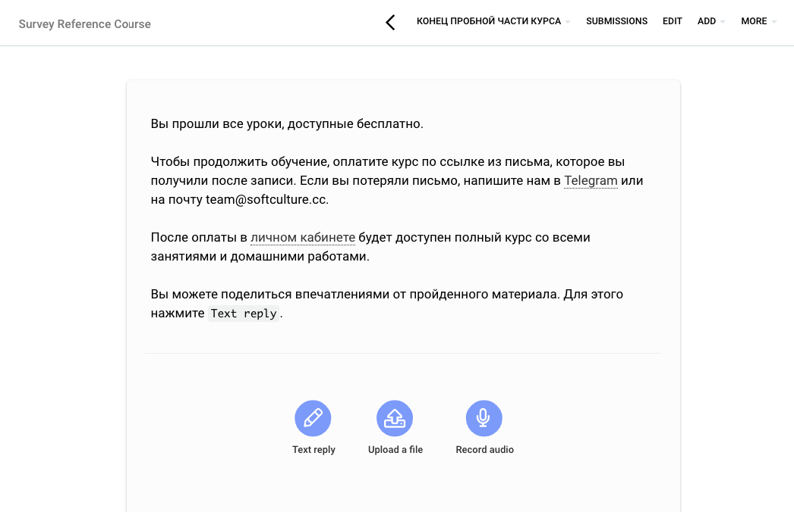
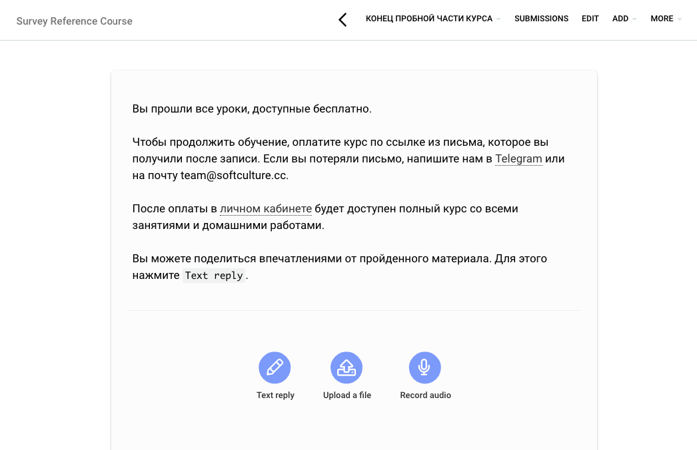

From the list: Общие ✔ Сделать финальную версию текста с редакторами Арсений А. added this on Apr 23, 2020 Completed Apr 25, 2020 by Арсений А. Assigned to Арсений А. Notes https://online.softculture.cc/unit/view/id:12425 Comments & Events Арсений Афонин Текст готов, осталось его запилить на LMS:https://softculture.quip.com/YlQBAlLfKPG7 Apr 24, 2020 at 3:52 PM No one was notified Арсений Афонин Олег , стоп-материал сделан и помощен в Survey Reference Course, отткуда он может быть клонирован в любой другой курс площадки. Интструкция по созданию стоп-материала написана в Notion в докумнетации к специальным материалам на TalentLMS.  Финальная версия стоп-материала • Download Apr 25, 2020 at 8:46 AM Notified 1 person Арсений Афонин completed this to-do. Apr 25, 2020 at 8:54 AM Арсений Афонин re-opened this to-do. Apr 25, 2020 at 8:54 AM Арсений Афонин completed this to-do. Apr 25, 2020 at 8:55 AM
Арсений Афонин Текст готов, осталось его запилить на LMS:https://softculture.quip.com/YlQBAlLfKPG7 Apr 24, 2020 at 3:52 PM No one was notified
Арсений Афонин Олег , стоп-материал сделан и помощен в Survey Reference Course, отткуда он может быть клонирован в любой другой курс площадки. Интструкция по созданию стоп-материала написана в Notion в докумнетации к специальным материалам на TalentLMS.  Финальная версия стоп-материала • Download Apr 25, 2020 at 8:46 AM Notified 1 person
 Арсений А.
Арсений А.
https://softculture.quip.com/YlQBAlLfKPG7